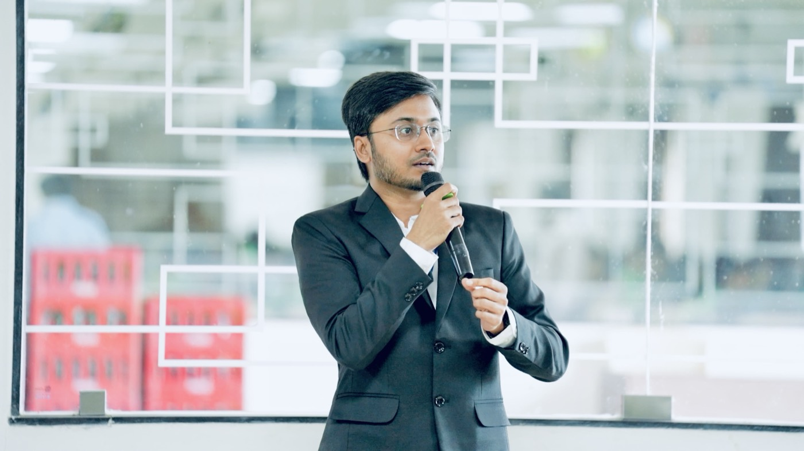

Guest Speaker · Jury Panel
Project Space 7.0 at Aditya University
The week an entire campus moved into its own build. I spoke, judged the finals and handed over the prizes.
700+ participants
120+ projects
20 finalists

Guest speaker
Manoj Satishkumar
Software Architect, Disney